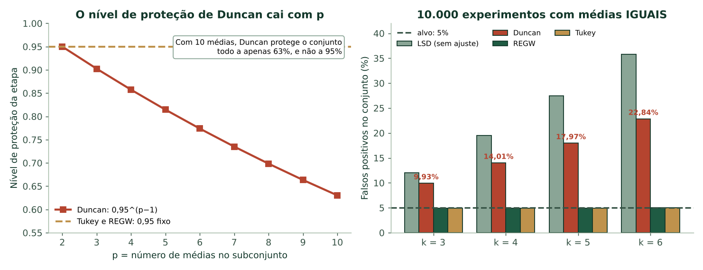
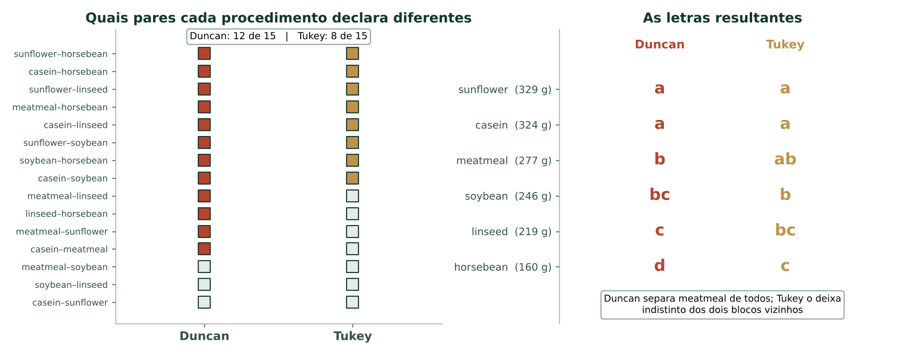

Duncan
Teste descendente de amplitudes múltiplas que ganha poder afrouxando o nível conforme o bloco cresce, sem controlar a taxa de erro do conjunto.
Comece por aqui
O teste de Duncan é, provavelmente, o procedimento de comparações múltiplas mais usado na literatura agronômica brasileira. Ele é descendente, como o REGW, e produz letras com a mesma facilidade. A diferença está no nível que adota em cada etapa — e essa diferença tem uma consequência que precisa ser dita com clareza: o teste de Duncan não controla a taxa de erro do conjunto.
O que é o teste
A mecânica é a mesma do REGW: ordenam-se as médias, testam-se blocos de \(p\) médias consecutivas do maior para o menor, e vale a regra de parada. O que muda é o nível de cada etapa. Duncan parte da ideia de nível de proteção: comparar \(p\) médias equivale a \(p-1\) comparações independentes, de modo que a proteção do bloco deveria ser \((1-\alpha)^{p-1}\).

A premissa de que comparar \(p\) médias equivale a \(p-1\) testes independentes é razoável como heurística, mas não corresponde à taxa de erro do conjunto que se quer controlar. O que Duncan controla, por construção, é a taxa de erro por comparação — cada par vizinho é testado a 5%, exatamente como no teste t sem ajuste. Daí a semelhança entre as duas curvas na simulação: Duncan é uma versão moderada da LSD de Fisher, não uma versão rigorosa do Tukey.
Pressupostos e como verificá-los
| Pressuposto | Por que importa | Como verificar |
|---|---|---|
| Observações independentes | O mesmo da ANOVA. | Delineamento. |
| Resíduos aproximadamente normais | Sustenta a amplitude estudentizada. | shapiro.test(residuals(modelo)). |
| Variâncias homogêneas | Usa um único QM do resíduo. | Levene e Brown-Forsythe. |
| Grupos balanceados (preferível) | Com n desiguais usa-se o erro-padrão de cada par. | table(grupo). |
| Aceitação explícita de uma taxa de erro maior que α | É a condição de uso honesto do procedimento. | Decisão metodológica, declarada no relatório. |
Hipóteses e estatística de teste
Em que:
- \(p\)
- número de médias no bloco
- \(\alpha_p\)
- nível de significância da etapa, que CRESCE com p
- \(\text{AMS}_p\)
- amplitude mínima significativa para um bloco de p médias (grupos balanceados)
- \(\nu\)
- graus de liberdade do resíduo
Exemplo numérico, passo a passo
| p | Proteção | α_p | q de Duncan | q de Tukey | q do REGW | AMS (g) |
|---|---|---|---|---|---|---|
| 2 | 0,950000 | 0,050000 | 2,8244 | 4,1527 | 3,4660 | 44,721 |
| 3 | 0,902500 | 0,097500 | 2,9714 | 4,1527 | 3,7816 | 47,049 |
| 4 | 0,857375 | 0,142625 | 3,0685 | 4,1527 | 3,9526 | 48,586 |
| 5 | 0,814506 | 0,185494 | 3,1392 | 4,1527 | 3,9680 | 49,706 |
| 6 | 0,773781 | 0,226219 | 3,1938 | 4,1527 | 4,1527 | 50,571 |
Para o bloco completo de seis médias, Duncan usa \(\alpha_6=0{,}2262\). Ou seja: ao julgar se as seis rações são todas iguais, ele aceita um risco de 22,6% de dizer que não são quando são — e esse é justamente o número que a simulação reproduz.
Na outra ponta, para um par vizinho, \(\alpha_2=0{,}05\): é exatamente o teste t sem ajuste. O valor crítico 2,8244 na escala de \(q\) corresponde a \(2{,}8244/\sqrt2=1{,}9971\) na escala de \(t\), que é o \(t_{0{,}975;\,65}\).
As amplitudes mínimas variam pouco, de 44,7 a 50,6 g, enquanto a do Tukey é fixa em 65,8 g. É daí que vem o poder adicional — e o problema.
Propriedades
- Controla a taxa de erro por comparação em \(\alpha\), não a taxa do conjunto.
- A taxa de erro do conjunto cresce com \(k\): cerca de 10% com \(k=3\) e 23% com \(k=6\), nas simulações desta ficha.
- Com k = 2 coincide com o teste t e com todos os demais procedimentos.
- É sempre mais poderoso que Tukey, REGW e Newman–Keuls, e sempre menos conservador que eles.
- Não fornece intervalos de confiança simultâneos.
- As amplitudes mínimas crescem muito devagar com p, o que explica a proximidade com a LSD.
Como interpretar os resultados
A interpretação mecânica é a mesma de qualquer procedimento de letras. O que muda é o que se pode afirmar a partir dela.
| Elemento | O que informa | Cuidado |
|---|---|---|
| Letras | Blocos homogêneos. | Cada par foi testado a 5%, individualmente. |
| Amplitude mínima por p | O critério de cada etapa. | Cresce pouco com p. |
| Número de pares separados | Em geral maior que o do Tukey. | Parte da diferença é falso positivo. |
| Taxa de erro do conjunto | Não é 5%. | Com k = 6, é cerca de 23%. |
Se o teste de Duncan for usado, o relatório deve dizer que o controle é por comparação, e não do conjunto. Uma formulação adequada: "as médias foram comparadas pelo teste de Duncan a 5% por comparação; com seis tratamentos, a probabilidade de ao menos um falso positivo no conjunto é de aproximadamente 23%". Essa frase não desqualifica o trabalho — ela permite que o leitor calibre a confiança nas conclusões, que é o objetivo de qualquer medida de incerteza.
Como executar no R e em Python
Onde executar o código em Python
Não é preciso instalar nada: o Google Colab é um computador na nuvem, gratuito, que executa Python pelo navegador e já traz as bibliotecas usadas aqui (numpy, scipy e matplotlib).
Não há função no R base. agricolae::duncan.test() devolve o quadro de letras, as amplitudes mínimas de cada etapa e as médias com desvios-padrão. O mesmo pacote traz LSD.test, SNK.test, REGW.test e HSD.test, com a mesma sintaxe — o que facilita apresentar os procedimentos lado a lado. qtukey(), do pacote stats, fornece os valores críticos de cada etapa.
modelo <- aov(weight ~ feed, data = chickwts)
agricolae::duncan.test(modelo, "feed", console = TRUE)
Exemplo de aplicação
Contexto dos dados
chickwts registra o peso, aos seis dias, de 71 pintinhos alimentados com seis rações diferentes. Os grupos têm tamanhos ligeiramente desiguais (de 10 a 14 aves), os resíduos passam no teste de normalidade (p = 0,627) e as variâncias são homogêneas (Brown–Forsythe p = 0,590). A ANOVA devolve F(5; 65) = 15,365 com p = 5,9 × 10⁻¹⁰: há diferença, e a pergunta passa a ser onde. Com seis rações são quinze comparações — e é esse número que cria o problema de multiplicidade. As fichas de Bonferroni, Šidák, Tukey e Games–Howell usam este mesmo conjunto, para que os resultados possam ser comparados diretamente.
Código em R
# Teste de amplitudes múltiplas de Duncan: exemplo completo ----
# Pacotes: agricolae (duncan.test). Base: stats
# install.packages("agricolae")
# 1. Dados: chickwts, peso de pintinhos por tipo de ração
data(chickwts)
modelo <- aov(weight ~ feed, data = chickwts)
summary(modelo)
k <- nlevels(chickwts$feed); gl <- df.residual(modelo)
QM <- sum(residuals(modelo)^2) / gl
# 2. O nível de proteção que Duncan adota em cada etapa
alfa <- 0.05
p <- 2:k
data.frame(p,
protecao = (1 - alfa)^(p - 1),
alfa_p = 1 - (1 - alfa)^(p - 1),
q_duncan = qtukey((1 - alfa)^(p - 1), p, gl),
q_tukey = qtukey(1 - alfa, k, gl),
AMS_duncan = qtukey((1 - alfa)^(p - 1), p, gl) * sqrt(QM / 12))
# 3. O procedimento
library(agricolae)
duncan.test(modelo, "feed", console = TRUE)
# 4. Lado a lado com os demais, no mesmo pacote
LSD.test(modelo, "feed", console = TRUE) # sem ajuste
SNK.test(modelo, "feed", console = TRUE) # Newman-Keuls
REGW.test(modelo, "feed", console = TRUE) # REGW
HSD.test(modelo, "feed", console = TRUE) # Tukey
# 5. A simulação que mostra o problema: médias TODAS iguais
set.seed(2026)
simula <- function(k, n = 12, M = 2000, alfa = 0.05) {
gl <- k * (n - 1)
q_tuk <- qtukey(1 - alfa, k, gl)
q_dun <- sapply(2:k, function(p) qtukey((1 - alfa)^(p - 1), p, gl))
dun <- tuk <- 0
for (b in 1:M) {
y <- matrix(rnorm(k * n), nrow = n)
m <- sort(colMeans(y), decreasing = TRUE)
ep <- sqrt(mean(apply(y, 2, var)) / n)
if ((m[1] - m[k]) / ep > q_tuk) tuk <- tuk + 1
achou <- FALSE; hom <- list()
for (pp in k:2) for (a in 1:(k - pp + 1)) {
bl <- a:(a + pp - 1)
if (any(sapply(hom, function(h) all(bl %in% h)))) next
if ((m[bl[1]] - m[bl[pp]]) / ep > q_dun[pp - 1]) achou <- TRUE
else hom[[length(hom) + 1]] <- bl
}
if (achou) dun <- dun + 1
}
c(duncan = dun / M, tukey = tuk / M)
}
sapply(3:6, function(k) simula(k)) # taxa de erro do conjunto, por número de grupos
# 6. Gráfico
par(mar = c(5, 8, 4, 2))
res <- duncan.test(modelo, "feed")
barplot(res$means[, 1], horiz = TRUE, las = 1, col = "gray85",
xlim = c(0, 420), xlab = "Peso aos 6 dias (g)")
par(mar = c(5, 4, 4, 2))
A mesma análise em Python, com os resultados
Cole o código em um notebook do Google Colab ↗ e execute com Shift+Enter. Os valores abaixo são a saída desse código.
# Bibliotecas: numpy, scipy e matplotlib (já instaladas no Google Colab)
import numpy as np
from scipy import stats
import itertools
# Dados: chickwts (R). Peso (g) de 71 pintinhos aos 6 dias, segundo seis rações.
# É o mesmo conjunto das fichas de Bonferroni, Šidák, Tukey e REGW.
dados = {
"horsebean": [179,160,136,227,217,168,108,124,143,140],
"linseed": [309,229,181,141,260,203,148,169,213,257,244,271],
"soybean": [243,230,248,327,329,250,193,271,316,267,199,171,158,248],
"sunflower": [423,340,392,339,341,226,320,295,334,322,297,318],
"meatmeal": [325,257,303,315,380,153,263,242,206,344,258],
"casein": [368,390,379,260,404,318,352,359,216,222,283,332]}
nomes = list(dados)
gs = [np.array(v, float) for v in dados.values()]
k = len(gs); ns = np.array([len(g) for g in gs], float); N = int(ns.sum())
medias = np.array([g.mean() for g in gs]); vars_ = np.array([g.var(ddof=1) for g in gs])
QM = np.sum((ns - 1) * vars_) / (N - k); gl = N - k
alfa = 0.05
ordem = np.argsort(-medias)
print("ração n média DP")
for i in ordem:
print(f"{nomes[i]:<12}{int(ns[i]):2d} {medias[i]:7.3f} {np.sqrt(vars_[i]):6.2f}")
print(f"\nANOVA: F({k-1}; {gl}) = {stats.f_oneway(*gs)[0]:.4f}, p = {stats.f_oneway(*gs)[1]:.3e}")
print(f"QM do resíduo = {QM:.4f} | gl = {gl}")
# 1. O nível de proteção de Duncan
print("\nO nível que Duncan adota para um subconjunto de p médias consecutivas")
print(" p nível de proteção alfa_p = 1 - 0,95^(p-1) q de Duncan q de Tukey q do REGW")
for p in range(2, k + 1):
prot = 0.95**(p - 1)
ap = 1 - prot
ar = alfa if p >= k - 1 else 1 - (1 - alfa)**(p / k)
print(f" {p} {prot:.6f} {ap:.6f} "
f"{stats.studentized_range.ppf(prot, p, gl):8.4f} "
f"{stats.studentized_range.ppf(1-alfa, k, gl):8.4f} "
f"{stats.studentized_range.ppf(1-ar, p, gl):8.4f}")
print("Duncan AUMENTA o nível conforme o subconjunto cresce; o REGW faz o contrário.")
print("É essa escolha que faz Duncan perder o controle da taxa de erro do conjunto.")
# 2. Amplitudes mínimas significativas
print("\nAmplitudes mínimas significativas (grupos balanceados em n = 12, para referência)")
print(" p q de Duncan AMS (g)")
for p in range(2, k + 1):
q = stats.studentized_range.ppf(0.95**(p-1), p, gl)
print(f" {p} {q:8.4f} {q*np.sqrt(QM/12):7.3f}")
# 3. O procedimento descendente
def passo_descendente(qcrit):
difere = np.zeros((k, k), bool); homogeneos = []; passos = []
for p in range(k, 1, -1):
for a in range(0, k - p + 1):
bloco = ordem[a:a + p]; cj = frozenset(bloco)
if any(cj <= h for h in homogeneos):
passos.append((p, [nomes[i] for i in bloco], None, None, "não testado")); continue
i, j = bloco[0], bloco[-1]
ep = np.sqrt(QM / 2 * (1/ns[i] + 1/ns[j]))
q = abs(medias[i] - medias[j]) / ep
c = qcrit(p)
if q > c:
difere[i, j] = difere[j, i] = True
passos.append((p, [nomes[i] for i in bloco], q, c, "heterogêneo"))
else:
homogeneos.append(cj)
passos.append((p, [nomes[i] for i in bloco], q, c, "HOMOGÊNEO: para aqui"))
return homogeneos, passos
print("\nTeste de Duncan, passo a passo")
hom, passos = passo_descendente(lambda p: stats.studentized_range.ppf(0.95**(p-1), p, gl))
print(f"{'p':>2} {'subconjunto (do maior ao menor)':<52}{'q':>8}{'crítico':>9} situação")
for p, bl, q, c, sit in passos:
bls = " > ".join(bl)
print(f"{p:>2} {bls:<52}" + (f"{'':>8}{'':>9}" if q is None else f"{q:8.4f}{c:9.4f}") + f" {sit}")
nd = np.zeros((k, k), bool)
for h in hom:
for x, y in itertools.combinations(h, 2): nd[x, y] = nd[y, x] = True
pares = [(nomes[a], nomes[b]) for a, b in itertools.combinations(range(k), 2) if not nd[a, b]]
print(f"\nPares declarados diferentes por Duncan: {len(pares)}")
print(" " + "; ".join(f"{b} - {a}" for a, b in pares))
# 4. Comparação com os demais
tuk = [(a, b) for a, b in itertools.combinations(range(k), 2)
if stats.studentized_range.sf(abs(medias[b]-medias[a])/np.sqrt(QM/2*(1/ns[a]+1/ns[b])), k, gl) < alfa]
print(f"\nQuais pares Duncan acrescenta ao que o Tukey já encontra:")
for a, b in itertools.combinations(range(k), 2):
if not nd[a, b] and (a, b) not in tuk:
pt = stats.studentized_range.sf(abs(medias[b]-medias[a])/np.sqrt(QM/2*(1/ns[a]+1/ns[b])), k, gl)
pb = min(1, 15 * 2*stats.t.sf(abs(medias[b]-medias[a])/np.sqrt(QM*(1/ns[a]+1/ns[b])), gl))
print(f" {nomes[b]} - {nomes[a]}: {medias[b]-medias[a]:+7.2f} g | "
f"p de Tukey = {pt:.4f} | p de Bonferroni = {pb:.4f}")
print("São exatamente as quatro comparações que os métodos que controlam a taxa de erro")
print("do conjunto classificam como achados compatíveis com o acaso.")
# 5. Letras
print("\nApresentação em letras (Duncan)")
cliques = []
for r in range(k, 0, -1):
for comb in itertools.combinations(ordem, r):
if all(nd[x, y] for x, y in itertools.combinations(comb, 2)):
cj = set(comb)
if not any(cj <= c for c in cliques): cliques.append(cj)
letras = [""] * k
for idx, c in enumerate(cliques):
for j in c: letras[j] += chr(ord("a") + idx)
print("ração média letras")
for i in ordem:
print(f"{nomes[i]:<12}{medias[i]:9.2f} {''.join(sorted(letras[i]))}")
# 6. A simulação que mostra o problema
print("\nSimulação: 10.000 experimentos com médias IGUAIS, para 3, 4, 5 e 6 grupos (n = 12)")
rng = np.random.default_rng(321)
M = 10000
print(" k grupos LSD Duncan REGWQ Tukey (alvo: 5%)")
for kk in (3, 4, 5, 6):
glr = kk * 11
q_t = stats.studentized_range.ppf(1 - alfa, kk, glr)
t_l = stats.t.ppf(1 - alfa/2, glr)
q_d = {p: stats.studentized_range.ppf(0.95**(p-1), p, glr) for p in range(2, kk+1)}
q_r = {p: stats.studentized_range.ppf(1 - (alfa if p >= kk-1 else 1-(1-alfa)**(p/kk)), p, glr)
for p in range(2, kk+1)}
G = rng.normal(0, 1, (M, kk, 12))
MM = G.mean(axis=2); EP = np.sqrt(G.var(axis=2, ddof=1).mean(axis=1) / 12)
c = dict(lsd=0, dun=0, reg=0, tuk=0)
iu = np.triu_indices(kk, 1)
for e in range(M):
mm = MM[e]; ep = EP[e]; om = np.argsort(-mm)
dif = np.abs(mm[:, None] - mm[None, :]) / ep
if (dif[iu] / np.sqrt(2) > t_l).any(): c['lsd'] += 1
if (dif[iu] > q_t).any(): c['tuk'] += 1
for chave, qc in (('dun', q_d), ('reg', q_r)):
achou = False; hm = []
for p in range(kk, 1, -1):
for a in range(0, kk - p + 1):
bl = om[a:a+p]; cj = frozenset(bl)
if any(cj <= h for h in hm): continue
if dif[bl[0], bl[-1]] > qc[p]: achou = True
else: hm.append(cj)
if achou: c[chave] += 1
print(f" {kk:3d} {100*c['lsd']/M:5.2f}% {100*c['dun']/M:5.2f}% "
f"{100*c['reg']/M:5.2f}% {100*c['tuk']/M:5.2f}%")
print("Duncan só controla a taxa de erro quando k = 2. A partir daí ela cresce,")
print("e é por isso que o procedimento é considerado liberal.")
Resultados da execução
ração n média DP
sunflower 12 328.917 48.84
casein 12 323.583 64.43
meatmeal 11 276.909 64.90
soybean 14 246.429 54.13
linseed 12 218.750 52.24
horsebean 10 160.200 38.63
ANOVA: F(5; 65) = 15.3648, p = 5.936e-10
QM do resíduo = 3008.5542 | gl = 65
O nível que Duncan adota para um subconjunto de p médias consecutivas
p nível de proteção alfa_p = 1 - 0,95^(p-1) q de Duncan q de Tukey q do REGW
2 0.950000 0.050000 2.8244 4.1527 3.4660
3 0.902500 0.097500 2.9714 4.1527 3.7816
4 0.857375 0.142625 3.0685 4.1527 3.9526
5 0.814506 0.185494 3.1392 4.1527 3.9680
6 0.773781 0.226219 3.1938 4.1527 4.1527
Duncan AUMENTA o nível conforme o subconjunto cresce; o REGW faz o contrário.
É essa escolha que faz Duncan perder o controle da taxa de erro do conjunto.
Amplitudes mínimas significativas (grupos balanceados em n = 12, para referência)
p q de Duncan AMS (g)
2 2.8244 44.721
3 2.9714 47.049
4 3.0685 48.586
5 3.1392 49.706
6 3.1938 50.571
Teste de Duncan, passo a passo
p subconjunto (do maior ao menor) q crítico situação
6 sunflower > casein > meatmeal > soybean > linseed > horsebean 10.1595 3.1938 heterogêneo
5 sunflower > casein > meatmeal > soybean > linseed 6.9576 3.1392 heterogêneo
5 casein > meatmeal > soybean > linseed > horsebean 9.8384 3.1392 heterogêneo
4 sunflower > casein > meatmeal > soybean 5.4062 3.0685 heterogêneo
4 casein > meatmeal > soybean > linseed 6.6208 3.0685 heterogêneo
4 meatmeal > soybean > linseed > horsebean 6.8870 3.0685 heterogêneo
3 sunflower > casein > meatmeal 3.2124 2.9714 heterogêneo
3 casein > meatmeal > soybean 5.0567 2.9714 heterogêneo
3 meatmeal > soybean > linseed 3.5923 2.9714 heterogêneo
3 soybean > linseed > horsebean 5.3696 2.9714 heterogêneo
2 sunflower > casein 0.3368 2.8244 HOMOGÊNEO: para aqui
2 casein > meatmeal 2.8829 2.8244 heterogêneo
2 meatmeal > soybean 1.9505 2.8244 HOMOGÊNEO: para aqui
2 soybean > linseed 1.8140 2.8244 HOMOGÊNEO: para aqui
2 linseed > horsebean 3.5257 2.8244 heterogêneo
Pares declarados diferentes por Duncan: 12
linseed - horsebean; soybean - horsebean; sunflower - horsebean; meatmeal - horsebean; casein - horsebean; sunflower - linseed; meatmeal - linseed; casein - linseed; sunflower - soybean; casein - soybean; meatmeal - sunflower; casein - meatmeal
Quais pares Duncan acrescenta ao que o Tukey já encontra:
linseed - horsebean: +58.55 g | p de Tukey = 0.1413 | p de Bonferroni = 0.2283
meatmeal - linseed: +58.16 g | p de Tukey = 0.1277 | p de Bonferroni = 0.2022
meatmeal - sunflower: -52.01 g | p de Tukey = 0.2207 | p de Bonferroni = 0.3965
casein - meatmeal: +46.67 g | p de Tukey = 0.3325 | p de Bonferroni = 0.6835
São exatamente as quatro comparações que os métodos que controlam a taxa de erro
do conjunto classificam como achados compatíveis com o acaso.
Apresentação em letras (Duncan)
ração média letras
sunflower 328.92 a
casein 323.58 a
meatmeal 276.91 b
soybean 246.43 bc
linseed 218.75 c
horsebean 160.20 d
Simulação: 10.000 experimentos com médias IGUAIS, para 3, 4, 5 e 6 grupos (n = 12)
k grupos LSD Duncan REGWQ Tukey (alvo: 5%)
3 11.99% 9.93% 4.94% 4.94%
4 19.55% 14.01% 4.91% 4.91%
5 27.48% 17.97% 4.93% 4.93%
6 35.76% 22.84% 5.04% 5.04%
Duncan só controla a taxa de erro quando k = 2. A partir daí ela cresce,
e é por isso que o procedimento é considerado liberal.
| Elemento | Valor | Leitura |
|---|---|---|
| Pares separados por Duncan | 12 de 15 | — |
| Pares separados sem ajuste (LSD) | 12 de 15 | Os mesmos doze. |
| Pares separados pelo REGW | 9 de 15 | — |
| Pares separados pelo Tukey | 8 de 15 | — |
| Letras de Duncan | a / a / b / bc / c / d | sunflower, casein, meatmeal, soybean, linseed, horsebean. |
| Letras de Tukey | a / a / ab / b / bc / c | — |
| Simulação, k = 3 | Duncan 9,93% | REGW 4,94% | Tukey 4,94% | Alvo: 5%. |
| Simulação, k = 4 | Duncan 14,01% | REGW 4,91% | Tukey 4,91% | — |
| Simulação, k = 5 | Duncan 17,97% | REGW 4,93% | Tukey 4,93% | — |
| Simulação, k = 6 | Duncan 22,84% | REGW 5,04% | Tukey 5,04% | — |
| Comparação | Diferença (g) | p de Tukey | p de Bonferroni |
|---|---|---|---|
| linseed − horsebean | +58,55 | 0,1413 | 0,2283 |
| meatmeal − linseed | +58,16 | 0,1277 | 0,2022 |
| meatmeal − sunflower | −52,01 | 0,2207 | 0,3965 |
| casein − meatmeal | +46,67 | 0,3325 | 0,6835 |
Leitura: nestes dados o teste de Duncan chega exatamente ao mesmo conjunto de conclusões que os testes t sem nenhum ajuste. Os quatro pares que ele acrescenta ao resultado do Tukey têm valores-p brutos entre 0,013 e 0,046 — a faixa em que, num conjunto de quinze comparações, resultados assim são o que se espera encontrar por acaso.
A simulação é o argumento decisivo. Com quatro tamanhos de experimento, Duncan produz ao menos um falso positivo em 10% a 23% das vezes, quando todas as médias populacionais são iguais. REGW e Tukey ficam em 5% nos quatro casos. Não se trata de uma diferença de filosofia estatística: é uma diferença no que o valor 0,05 significa no relatório final.
Quando o uso é defensável
O teste de Duncan tem lugar legítimo em duas situações. A primeira é a triagem exploratória: quando um experimento preliminar seleciona tratamentos para uma fase posterior, errar para mais custa pouco — um tratamento inócuo segue para a etapa seguinte e lá será descartado —, enquanto errar para menos elimina definitivamente algo que poderia ser bom. A segunda é a comparabilidade com a literatura anterior: em áreas onde séries históricas de experimentos foram analisadas por Duncan, mudar de procedimento dificulta a comparação.
Fora dessas situações, o REGW oferece quase o mesmo poder com controle rigoroso, e o Tukey oferece intervalos de confiança. A recomendação da literatura metodológica desde os anos 1980 é consistente: em trabalhos confirmatórios, prefira um procedimento que controle a taxa de erro do conjunto.
Erros comuns
| Erro | Como evitar |
|---|---|
| Afirmar que o teste controla o erro a 5% | Ele controla por comparação, não no conjunto. |
| Apresentar letras de Duncan como se fossem de Tukey | Diga qual procedimento foi usado. |
| Escolher Duncan porque ele "deu mais letras" | A escolha é metodológica e anterior à análise. |
| Confundir com o teste de Dunnett | São coisas diferentes: Dunnett compara com um controle. |
| Usar em estudo confirmatório sem ressalva | Em trabalho confirmatório, prefira REGW ou Tukey. |
| Procurar intervalos de confiança | O procedimento não os fornece. |
| Usar com variâncias desiguais | Depende de um QM do resíduo comum. |
| Esquecer de informar o número de tratamentos | A taxa de erro do conjunto depende de k. |
Alternativas e fluxo de trabalho
| Procedimento | Quando preferir |
|---|---|
| REGW | Quase o mesmo poder, com controle rigoroso. É a substituição natural. |
| Tukey–Kramer | Quando forem necessários intervalos de confiança. |
| LSD de Fisher | Apenas com k = 3 e depois de uma ANOVA significativa, onde o controle é exato. |
| Newman–Keuls (SNK) | Intermediário entre Duncan e REGW; também não controla a taxa do conjunto. |
| Dunnett | Tratamentos contra um controle. |
| Scott–Knott | Agrupamento de médias sem letras ambíguas; popular em melhoramento vegetal. |
| Benjamini–Hochberg (FDR) | Quando se aceita uma proporção de falsas descobertas, com controle formal. |
| Contrastes planejados | Perguntas definidas antes do experimento. |
- Ajuste a ANOVA e verifique os pressupostos.
- Pergunte se o estudo é exploratório ou confirmatório.
- Em estudo confirmatório, considere REGW ou Tukey antes de Duncan.
- Se usar Duncan, declare no relatório qual taxa de erro está sendo controlada.
- Apresente as médias com erros-padrão ao lado das letras.
- Quando possível, mostre também o resultado de um procedimento rigoroso.
Referências desta ficha
- DUNCAN, David B. Multiple range and multiple F tests. Biometrics, v. 11, n. 1, p. 1-42, 1955.
- DUNCAN, David B. A Bayesian approach to multiple comparisons. Technometrics, v. 7, n. 2, p. 171-222, 1965.
- CARMER, S. G.; SWANSON, M. R. An evaluation of ten pairwise multiple comparison procedures by Monte Carlo methods. Journal of the American Statistical Association, v. 68, n. 341, p. 66-74, 1973.
- EINOT, Israel; GABRIEL, K. Ruben. A study of the powers of several methods of multiple comparisons. Journal of the American Statistical Association, v. 70, n. 351, p. 574-583, 1975.
- SEAMAN, Michael A.; LEVIN, Joel R.; SERLIN, Ronald C. New developments in pairwise multiple comparisons: some powerful and practicable procedures. Psychological Bulletin, v. 110, n. 3, p. 577-586, 1991.
- SCOTT, A. J.; KNOTT, M. A cluster analysis method for grouping means in the analysis of variance. Biometrics, v. 30, n. 3, p. 507-512, 1974.
- HOCHBERG, Yosef; TAMHANE, Ajit C. Multiple comparison procedures. New York: Wiley, 1987.
- MILLER JR., Rupert G. Simultaneous statistical inference. 2. ed. New York: Springer, 1981.
- MONTGOMERY, Douglas C. Design and analysis of experiments. 10. ed. Hoboken: Wiley, 2019.
- ANÓNIMO. Biometrika table. Biometrika, v. 35, p. 214, 1948; ver McNEIL, Donald R. Interactive data analysis. New York: Wiley, 1977. (Fonte dos dados
chickwts.) - R CORE TEAM. R: a language and environment for statistical computing. Vienna: R Foundation for Statistical Computing, 2026. Disponível em: https://www.r-project.org/. (Função
qtukey, pacotestats.) - DE MENDIBURU, Felipe. agricolae: statistical procedures for agricultural research. R package. Disponível em: https://CRAN.R-project.org/package=agricolae. (Função
duncan.test.) - POSIT TEAM. RStudio: integrated development environment for R. Boston: Posit Software, PBC. Disponível em: https://posit.co/download/rstudio-desktop/.
- VIRTANEN, Pauli et al. SciPy 1.0: fundamental algorithms for scientific computing in Python. Nature Methods, v. 17, p. 261-272, 2020. DOI: 10.1038/s41592-019-0686-2. (Funções do módulo
scipy.stats.) - HARRIS, Charles R. et al. Array programming with NumPy. Nature, v. 585, p. 357-362, 2020. DOI: 10.1038/s41586-020-2649-2.
- HUNTER, John D. Matplotlib: a 2D graphics environment. Computing in Science & Engineering, v. 9, n. 3, p. 90-95, 2007.
- GOOGLE. Google Colaboratory. Disponível em: https://colab.research.google.com/.
- As figuras desta ficha foram elaboradas pelo autor.

Prof. Dr. Cássius Henrique Xavier Oliveira
Professor · ICTIN/UFLA · Estatística, Confiabilidade e Ciência de Dados.
Conheça minha trajetória e projetos →